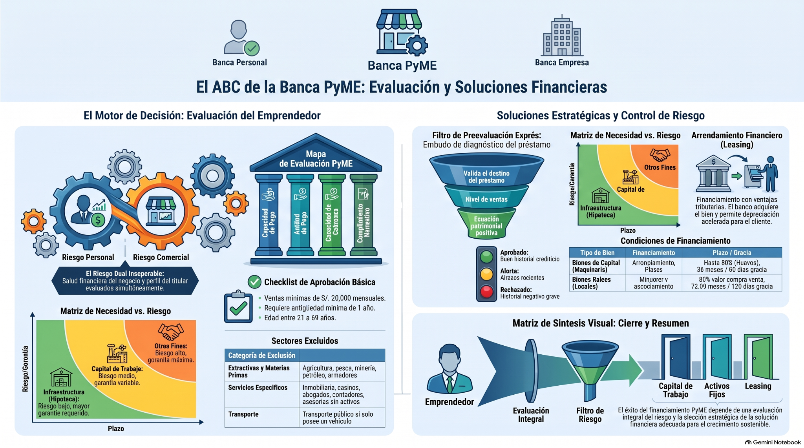

Banca Personal, Banca PyME y Banca Empresa
El mismo banco, decisiones distintas según cliente, necesidad y riesgo
Reconoce cómo cambia la evaluación entre segmentos y experimenta con tres herramientas: scoring personal, preevaluación PyME y estructuración empresarial.
Personal · PyME · Empresa.
Datos declarados versus datos sustentados.
Capacidad, actitud, política y riesgo.
Producto y plazo coherentes con la necesidad.
Si una persona, una PyME y una empresa solicitan el mismo monto, ¿deberían recibir exactamente la misma evaluación solo porque la cifra coincide?
Cuatro tarjetas para entender cómo decide el banco
Pasa el mouse sobre cada tarjeta para verla girar. Haz clic o tócala para abrir el contenido ampliado.
El mismo cliente puede recibir decisiones diferentes
Ingresa datos, identifica la evidencia que los respalda y compara cómo cambia la decisión bajo tres apetitos de riesgo. Las ponderaciones son académicas y configurables; no representan políticas reales de una entidad.
Seis preguntas para verificar comprensión
Las alternativas se barajan en cada ejecución. Si fallas el primer intento, tendrás un segundo; tras un segundo error se activa la Ruta correcta.
Abre cada material sin salir del programa
PPT, artículo, infografía, videos y audio se visualizan dentro del programa. Los materiales visuales incluyen Leer, Explicar, Pausar, Continuar y Detener.
Una decisión crediticia no nace de un solo número
La segmentación define cómo mirar al cliente; la evidencia indica cuánto podemos confiar en los datos; el apetito de riesgo cambia ponderaciones y umbrales; y la validación cualitativa puede confirmar o modificar una precalificación numérica.
Personal, PyME y Empresa requieren lógicas de evaluación distintas porque cambian la fuente de pago, la complejidad y el destino.
Un dato declarado gana valor cuando puede verificarse mediante boletas, recibos, historial, ventas, patrimonio u otra evidencia pertinente.
El mismo cliente puede aprobar bajo una política y no bajo otra. No cambió el cliente: cambió la tolerancia y la ponderación del riesgo.
Los números no reemplazan carácter, consistencia ni juicio crediticio. Precalificar no significa desembolsar automáticamente.

Una buena evaluación bancaria conecta tres preguntas: ¿quién es el cliente?, ¿qué evidencia demuestra que puede y quiere cumplir?, y ¿qué solución financiera corresponde a su necesidad y al riesgo que la entidad está dispuesta a asumir? El scoring ayuda, pero no decide solo; la documentación valida, el carácter aporta la dimensión cualitativa y la política de riesgo define los límites. Por eso dos entidades pueden observar al mismo cliente y llegar a decisiones distintas sin que una evaluación sea necesariamente idéntica a la otra.